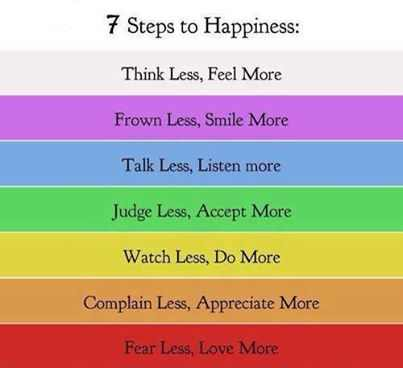
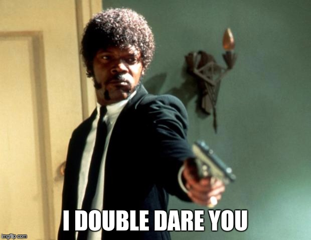
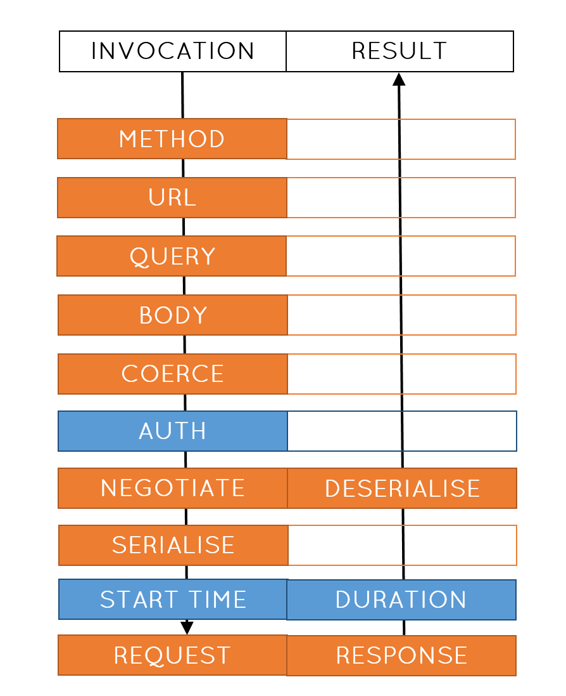
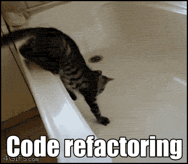

Remote graphs
Oliver Hine
Networking

HTTP
(defn create-pet []
(http/post "https://api.com/create-pet/dog"))
HTTP
(defn create-pet [metrics host port creds species name age]
(timing metrics "create-pet"
(http/post (format "https://%s:%s/create-pet/%s" host port species)
{:as :json
:query-params {:age age}
:body (json/encode {:name name))
:headers {"Content-Type" "application/json"
"Authorization" (str "Token" creds)}})))

Describe
{:route-name :create-pet
:produces ["application/xml"]
:consumes ["application/xml"]
:path-parts ["/pets/" :species]
:method :post
:path-schema {:species Species}
:body-schema {:pet {:id s/Int
:name s/Str}}
Call stack

Call
(martian/response-for m :create-pet {:name "Charlie"
:species "Dog"
:age 3})
Fetches
Muse
(def google-auth
(->Request :google-credentials {}))
Dependent muse
(def public-transport
(->> google-auth
(u/mapcat (fn [creds]
(->Request :google-commute
{:method "Public"
:auth creds})))))
Dependent muse...
(def commute-durations
(->> (u/collect [public-transport walking car])
(u/map (fn [[public walking car]]
{:public (:duration public)
:walking (:duration walking)
:car (:duration car)}))))
...dependent muse
(def perfect-podcasts
(->> (u/collect [commute-durations podcasts])
(u/map (fn [[{:keys [public walking car]} podcasts]]
{:public (of-duration podcasts public)
:walking (of-duration podcasts walking)
:car (of-duration podcasts car)}))))
Execution
(u/run! muse {:env {:martian martian}})
Refactoring

Graphs
Resolution
 oliyh/martian
oliyh/martian